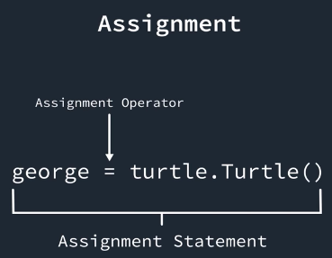
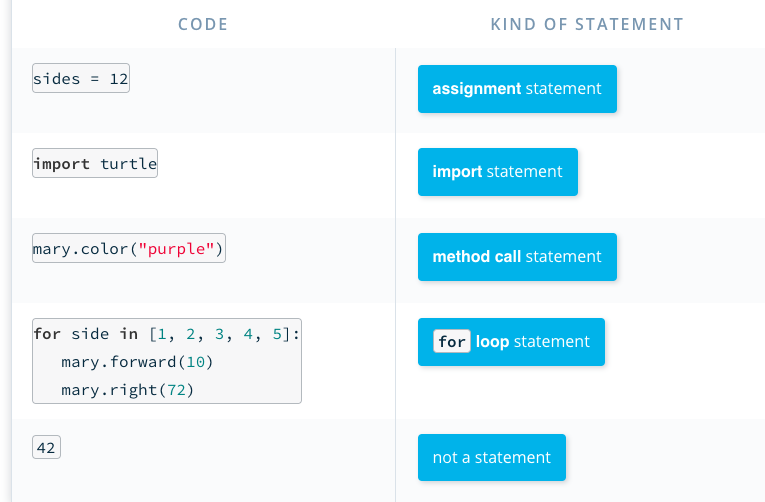
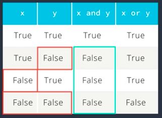

import turtle
george = turtle.Turtle()
george.color("yellow")
for whatever in [1, 2, 3, 4]:
george.forward(100)
george.right(90)
george.penup()
george.pendown()
Shortcut or hotkey for comment is "command" + slice /.
# Phyton use Hastag for comment.

What does amy.forward(100)?
We're calling the forward method on a Turtle object named amy, and giving the input 100.

import turtle
amy = turtle.Turtle()
amy.color("cyan")
some_list = [0, 0, 0, 0, 0, 0, 0, 0, 0, 0, 0, 0]
for item in some_list:
amy.forward(50)
amy.right(30)
import turtle
amy = turtle.Turtle()
niceColor = ["red", "orange", "yellow"]
amy.penup()
amy.back(140)
amy.pendown()
for justNice in niceColor:
amy.color(justNice)
amy.forward(50)
amy.penup()
amy.forward(50)
amy.pendown()
import turtle
jack = turtle.Turtle()
jack.width(5)
jack.color("yellow")
for side in range(4):
if side == 1: - - - - - - - //Make line 2 has Blue color
jack.color("blue")
else: - - - - - - - // Make line 1,3,4 have Yellow Color
jack.color("yellow")
jack.forward(100)
jack.right(90)
The modulo operation is kind of like the hands of a clock. The minute hand starts at 0 and counts up to 59, then goes back to 0 at the beginning of the next hour. Like this: 0, 1, 2, 3 . . . 57, 58, 59, 0, 1, 2, 3 . . . 57, 58, 59, 0, 1, 2, 3 . . . with %60
import turtle
amy = turtle.Turtle()
amy.color("yellow")
amy.width(2)
def go():
amy.forward(50)
for n in range(6):
go()
if n%2 == 0:
amy.left(90)
else:
amy.right(90)
for num in range(16):
if num % 3 == 0:
fizz(t)
if num%5 == 0:
buzz(t)
else:
if num%5 == 0:
buzz(t)
else:
plain(t)
t.color("gray")
t.forward(22)
# Advance to the next bead spot.
cards = ["ace", 2, 3, 4, 5, 6, 7, 8, 9, "jack", "queen", "king"]
my_card = random.choice(cards)
random.randint
randint stands for "random integer", because that's exactly what it does—it returns a random integer. Here's an example:
die_roll = random.randint(1, 6)
if x > 0 and x < 10:
# Do something
In this case, both x > 0 and x < 10 have to be True for the code in the if statement to run. In other words, this is saying "if x is both greater than 0 and less than 10, run this code.
import turtle
t = turtle.Turtle()
t.color("lime")
t.width(3)
t.penup()
t.shape("turtle")
for step in range(200):
t.forward(1)
if t.xcor()>40 :
t.right(180)
if t.xcor()< -40 :
t.left(180)
The shell is a command-line interface that many programmers use to work with files, directories, and programs.
In Bash, you can locate the python file with cd and ls, after that write "python printing.py" to execute the program.
In Python Launcher, you can operate interactive mode of Python. You can also achieve real-time editor in bash by writting "python3", and press 'control D in MAC' or 'control Z in Windows' / write "exit()" to move out.
>>> n = int(input("Please enter a number:"))
Please enter a number:4
Remember to put "chance" + dot(.) before the function call.
Just like what we did to random.choice(), random.randint(), turtle.Turtle()
This is called Dot Notation is used to say where something is located.
You can also import a webpage like import antigravity: it will open a web browser.
Few important notes:
word [-1] is the last character
word[-2] is the second last character.
... animal = "aardwolf"
... food = "termites"
... f"The {animal} eats {food}."
Boolean Operations: And -- or

def total_length(list_of_strings):
total = 0
for string in list_of_strings:
total = total + list_of_strings
return total
Combination of Loop, IF and Boolean. This will keep repeating if it produce "True" boolean, and stop for 1x "False"
For example: Password Checker
def Password_check(s):
while input("Password: ") != 'swordfish':
print("Wrong! Try again!")
print("Okay, come on in!")
>> Password_check()
n = 10
while n > 1:
time.sleep(1)
print(n)
n -= 1
print("Blastoff!")
s = "abracadabra"
index = len(s)
while index != 0:
index -= 1
print(s[0:index])
def until_dot(word):
index = 0
while index < len(word) and word[index] != ".":
index += 1
print(word[:index] + ".")
word = input("Enter multiple sentences: ")
until_dot(word)